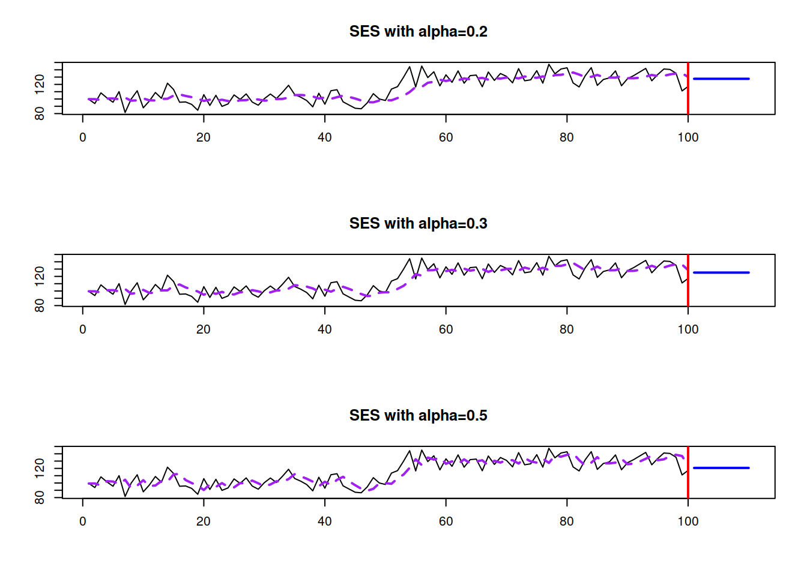
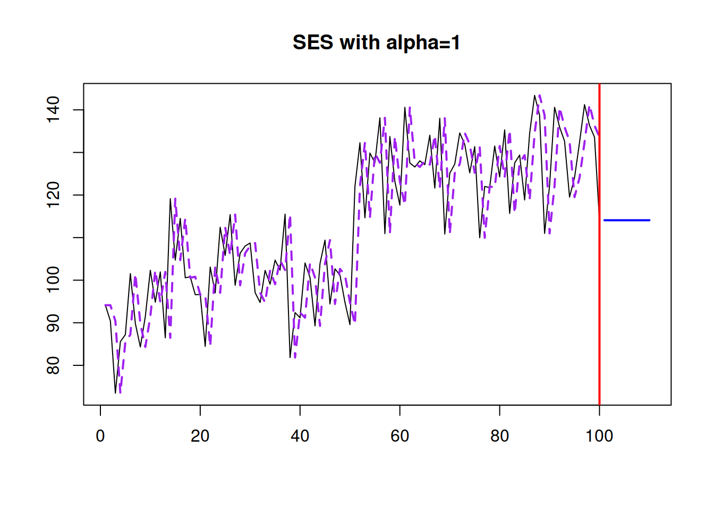
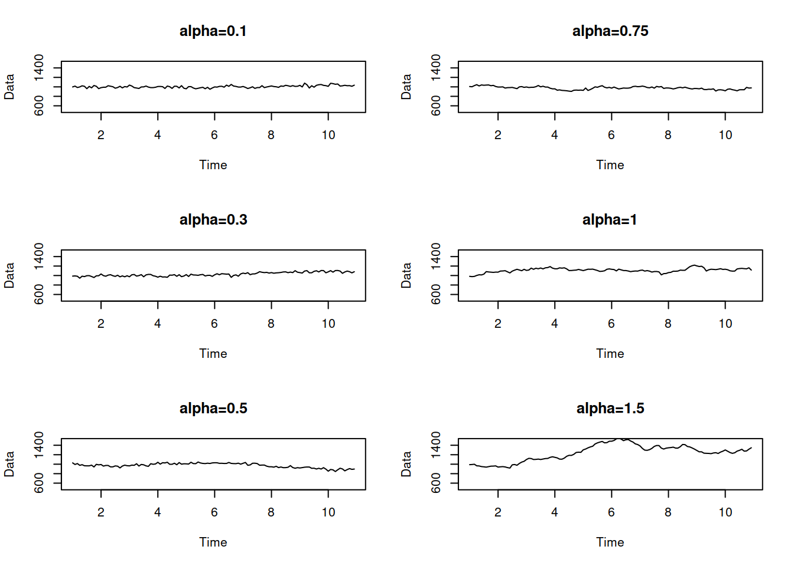
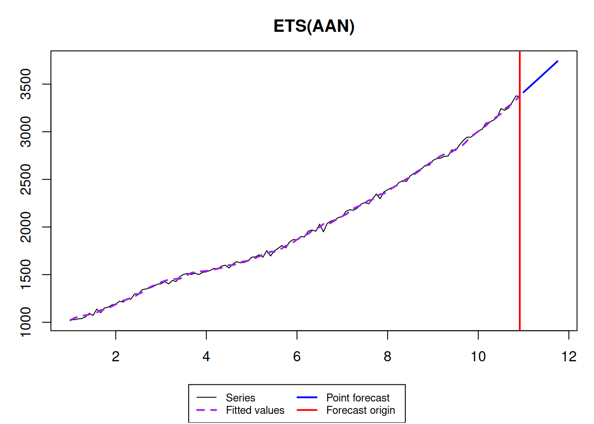

5.3 Sevaral examples of exponential smoothing methods and ETS
There are other exponential smoothing, which include more components, as discussed in the previous section. This includes but is not restricted with: Holt’s (Holt 2004) (originally proposed in 1957), Holt-Winter’s (Winters 1960), multiplicative trend (Pegels 1969), Damped trend (originally proposed by Roberts (1982) and then picked up by Gardner and McKenzie (1985)), Damped trend Holt-Winters (Gardner and McKenzie 1989) and damped multiplicative trend methods (Taylor 2003). We will not disuss them here one by one, as we will not use them further in this textbook. More importantly, all of them have underlying ETS models, so we will focus on them instead.
We already understand that there can be different components in time series and that they can interact with each other either in an additive or a multiplicative way, which gives us the aforementioned taxonomy. The equations discussed in the previous section represent so called “measurement” or “observation” equations of the ETS models. But we should also reflect the potential change in components over time, in a similar manner done in the second equation of (5.3). Here are several examples of ETS models with several components.
5.3.1 ETS(A,A,N)
This is also sometimes known as local trend model and is formulated as ETS(A,N,N), but with addition of the trend equation. It underlies Holt’s method: \[\begin{equation} \begin{split} y_{t} &= l_{t-1} + b_{t-1} + \epsilon_t \\ l_t &= l_{t-1} + b_{t-1} + \alpha \epsilon_t \\ b_t &= b_{t-1} + \beta \epsilon_t \end{split} , \tag{5.14} \end{equation}\] where \(\beta\) is the smoothing parameter for the trend component. It has a similar idea as ETS(A,N,N): the states evolve over time, and the speed of their change depends on the values of \(\alpha\) and \(\beta\).
Here is an example of the data that corresponds to the ETS(A,A,N) model:

As you might notice, the trend is not deterministic in this model: both the intercept and the slope change over time. The higher the smoothing parameters are, the more uncertain it is, what the level and the slope will be, thus higher the uncertainty about the future values is.
The point forecast h steps ahead from this model is a straight line with a slope \(b_t\): \[\begin{equation} \mu_{y,t+h|t} = \hat{y}_{t+h} = l_{t} + h b_t. \tag{5.15} \end{equation}\] This becomes apparent if one takes the conditional expectations E\((l_{t+h}|t)\) and E\((b_{t+h}|t)\) in the second and third equations of (5.14). Graphically it will look like this:

If you want to experiment with the model and see how its parameters influence the fit and forecast, you can use the following R code:
where persistence is the vector of smoothing parameters (first \(\alpha\), then \(\beta\)).
5.3.2 ETS(A,Ad,N)
This is the model that underlies Damped trend method (Roberts 1982): \[\begin{equation} \begin{split} y_{t} &= l_{t-1} + \phi b_{t-1} + \epsilon_t \\ l_t &= l_{t-1} + \phi b_{t-1} + \alpha \epsilon_t \\ b_t &= \phi b_{t-1} + \beta \epsilon_t \end{split} , \tag{5.16} \end{equation}\] where \(\phi\) is the dampening parameter, typically lying between 0 and 1. If it is equal to zero, then the model (5.16) reduces to (5.3). If it is equal to one, then it becomes equivalent to (5.14). The dampening parameter slows down the trend, making it non-linear. The typical data that corresponds to ETS(A,Ad,N) is:
x <- sim.es("AAdN", 120, 1, 12, persistence=c(0.3,0.1), initial=c(1000,20), phi=0.95, mean=0, sd=20)
plot(x)
The point forecast from this model is a bit more complicated: \[\begin{equation} \mu_{y,t+h|t} = \hat{y}_{t+h} = l_{t} + \sum_{j=1}^h \phi^j b_t. \tag{5.15} \end{equation}\] It corresponds to the slowing down trajectory:

5.3.3 ETS(A,A,M)
Finaly, this is an exotic model with additive error and trend, but multiplicative seasonality. Still, we list it here, because it underlies the Holt-Winters method (Winters 1960): \[\begin{equation} \begin{split} y_{t} &= (l_{t-1} + b_{t-1}) s_{t-m} + \epsilon_t \\ l_t &= l_{t-1} + b_{t-1} + \alpha \frac{\epsilon_t}{s_{t-m}} \\ b_t &= b_{t-1} + \beta \frac{\epsilon_t}{s_{t-m}} \\ s_t &= s_{t-m} + \gamma \frac{\epsilon_t}{l_{t-1}+b_{t-1}} \end{split} , \tag{5.17} \end{equation}\] where \(s_t\) is the seasonal component and \(\gamma\) is its smoothing parameter. This is one of the potentially unstable models, which due to the mix of components might produce unreasonable forecasts. Still, it might work on the strictly positive high level data. Here how the data for this model can look like:
## Warning: The length of persistence vector does not correspond to the chosen model!
## Falling back to random number generator.
Finally, the point forecast from this model are based on the ETS(A,A,N): \[\begin{equation} \hat{y}_{t+h} = (l_{t} + h b_t) s_{t+h-m\lceil\frac{h}{m}\rceil}, \tag{5.15} \end{equation}\] where \(\lceil\frac{h}{m}\rceil\) is the rounded up value of the fraction in the brackets.
The point forecasts produced from this model do not correspond to the conditional expectations. This will be discussed in the next chapters.
References
Gardner, Everette S, and Ed McKenzie. 1985. “Forecasting trends in time series.” Management Science 31 (10): 1237–46. https://doi.org/10.1016/0169-2070(86)90056-7.
Gardner, Everette S, and Ed McKenzie. 1989. “Seasonal Exponential Smoothing with Damped Trends.” Management Science 35 (3): 372–76. https://doi.org/10.1287/mnsc.35.3.372.
Holt, Charles C. 2004. “Forecasting seasonals and trends by exponentially weighted moving averages.” International Journal of Forecasting 20 (1): 5–10. https://doi.org/10.1016/j.ijforecast.2003.09.015.
Pegels, C Carl. 1969. “Exponential Forecasting : Some New Variations.” Management Science 15 (5): 311–15. https://www.jstor.org/stable/2628137.
Roberts, S. A. 1982. “A General Class of Holt-Winters Type Forecasting Models.” Management Science 28 (7): 808–20. https://doi.org/10.1287/mnsc.28.7.808.
Taylor, James W. 2003. “Exponential smoothing with a damped multiplicative trend.” International Journal of Forecasting 19 (4): 715–25. https://doi.org/10.1016/S0169-2070(03)00003-7.
Winters, P R. 1960. “Forecasting Sales by Exponentially Weighted Moving Averages.” Management Science 6 (3): 324–42. https://doi.org/10.1287/mnsc.6.3.324.